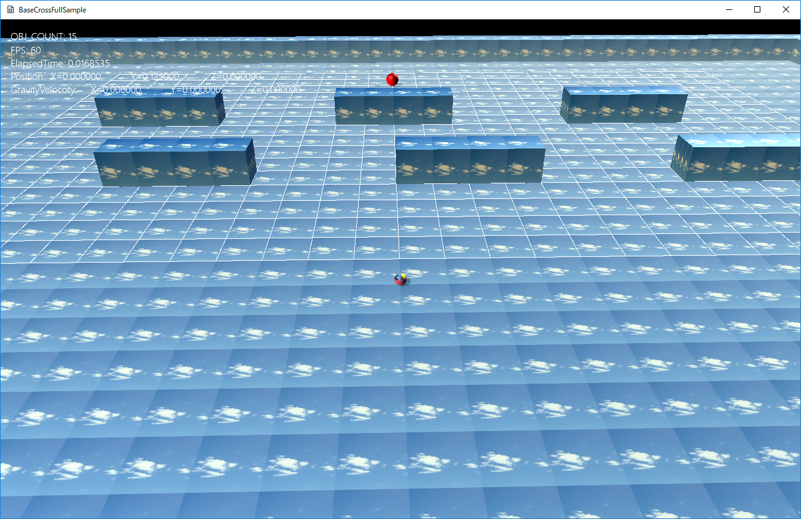

図1209a
ここで、プレイヤーをマス目の中に移動します。すると、奥にいる赤い球（敵です）が、プレイヤーを追いかけてきます。
//セルマップの作成
void GameStage::CreateStageCellMap() {
float PieceSize = 1.0f;
auto Ptr = AddGameObject<StageCellMap>(Vec3(-12.0f, 0, 1.0f), PieceSize,26, 16);
//セルマップの区画を表示する場合は以下の設定
Ptr->SetDrawActive(true);
//さらにセルのインデックスとコストを表示する場合は以下の設定
//Ptr->SetCellStringActive(true);
SetSharedGameObject(L"StageCellMap", Ptr);
//セルマップへのボックスのコスト設定
SetCellMapCost();
}
Vec3(-12.0f, 0, 1.0f) セルマップの開始点 PieceSize 1ピースのサイズ 26 横方向（X方向）の数 16 奥方向（Z方向）の数
//セルマップへのボックスのコスト設定
SetCellMapCost();
void GameStage::SetCellMapCost() {
//セルマップ内にFixedBoxの情報をセット
auto PtrCellmap = GetSharedGameObject<StageCellMap>(L"StageCellMap");
auto BoxGroup = GetSharedObjectGroup(L"FixedBoxes");
//セルマップからセルの配列を取得
auto& CellVec = PtrCellmap->GetCellVec();
//ボックスグループからボックスの配列を取得
auto& BoxVec = BoxGroup->GetGroupVector();
vector<AABB> ObjectsAABBVec;
for (auto& v : BoxVec) {
auto FixedBoxPtr = dynamic_pointer_cast<TilingFixedBox>(v.lock());
if (FixedBoxPtr) {
auto ColPtr = FixedBoxPtr->GetComponent<CollisionObb>();
//ボックスの衝突判定かラッピングするAABBを取得して保存
ObjectsAABBVec.push_back(ColPtr->GetObb().GetWrappedAABB());
}
}
//セル配列からセルをスキャン
for (auto& v : CellVec) {
for (auto& v2 : v) {
for (auto& vObj : ObjectsAABBVec) {
if (HitTest::AABB_AABB_NOT_EQUAL(v2.m_PieceRange, vObj)) {
//ボックスのABBとNOT_EQUALで衝突判定
v2.m_Cost = -1;
break;
}
}
}
}
}
void Enemy::OnCreate() {
//初期位置などの設定
auto ptr = GetComponent<Transform>();
ptr->SetScale(0.5f, 0.5f, 0.5f);
ptr->SetRotation(0.0f, 0.0f, 0.0f);
ptr->SetPosition(m_StartPosition);
//CollisionSphere衝突判定を付ける
AddComponent<CollisionSphere>();
auto MapPtr = m_CelMap.lock();
if (MapPtr) {
AddComponent<PathSearch>(MapPtr);
}
//影をつける（シャドウマップを描画する）
auto shadowPtr = AddComponent<Shadowmap>();
//影の形（メッシュ）を設定
shadowPtr->SetMeshResource(L"DEFAULT_SPHERE");
//描画コンポーネントの設定
auto ptrDraw = AddComponent<BcPNTStaticDraw>();
ptrDraw->SetFogEnabled(true);
//描画するメッシュを設定
ptrDraw->SetMeshResource(L"DEFAULT_SPHERE");
ptrDraw->SetDiffuse(Col4(1.0f, 0, 0, 1.0f));
}
void Enemy::OnUpdate() {
m_Force.setAll(0.0f);
auto PlayerPtr = GetStage()->GetSharedGameObject<Player>(L"Player");
auto PlayerPos = PlayerPtr->GetComponent<Transform>()->GetPosition();
PlayerPos.y = GetStartPosition().y;
if (SeekBehavior(PlayerPos) == CellSearchFlg::Failed) {
if (SeekBehavior(GetStartPosition()) == CellSearchFlg::Arrived) {
ArriveBehavior(GetStartPosition());
}
}
float ElapsedTime = App::GetApp()->GetElapsedTime();
m_Velocity += m_Force * ElapsedTime;
auto EnemyPos = GetComponent<Transform>()->GetPosition();
if (length(EnemyPos - PlayerPos) <= 1.8f) {
m_Velocity *= 0.95f;
}
auto Pos = GetComponent<Transform>()->GetPosition();
Pos += m_Velocity * ElapsedTime;
GetComponent<Transform>()->SetPosition(Pos);
}